第一章：行前行李與必備清單檢核表
進度 0/32重要證件與隨身財物
保暖與冬季穿搭
隨身生活、防護與衛生
通訊、攝影與航行舒適
Visit Japan Web (VJW) 全攻略實戰指南
出發前線上登錄 ➔ 抵達通關 ➔ 落地現場 3 分鐘啟用免稅二維碼
vjw.digital.go.jp 並點選「加入主畫面」設為桌面捷徑圖示即可。
【階段一：出發前線上登錄】（出發前 3～7 天完成）
- 登錄本人資訊： 登入後進入「本人資訊」，確認均非日本護照持有者，以手機相機掃描或手動輸入護照號碼、英文姓名與效期。
- 登錄預定日程： 建立行程「2027名古屋富士山」，預定抵達日為 2027/01/31。搭乘航班代碼填 MM722（Peach Aviation / 樂桃航空）。
- 在日聯絡處（首日住宿）： 郵遞區號填
416-0939點自動帶入，名稱填HOTEL ROUTE-INN SHIN-FUJI EKIMAE，聯絡電話填0545-66-1011。 - 填寫入境審查及海關申報： 入境目的選「觀光」，停留天數填「6」天。攜帶品申報逐頁依實際誠實勾選（一般自用品皆選「否」）。
- 生成入境二維碼： 送出後點選「顯示 QR Code」，三台手機各自確認畫面可顯示帶有動態防偽邊框的「入境審查・海關申報二維碼」。
【階段二：抵達日本中部機場落地啟用免稅碼】（1/31 清晨入境大廳）
落地啟用三步驟（現場僅需 3 分鐘）：
- 通關拿貼紙： 通過入境審查櫃檯時，移民官核驗後會在護照內頁貼上一張印有二維碼的「短期滯在（Temporary Visitor）」上陸許可貼紙。領回護照時確認貼紙清晰平整。
- 開網頁點選建立： 提領行李出關後，於迎賓大廳連上網路，三台手機各自點開 VJW 捷徑，進入功能選單點選「在日本停留期間的手續」 ➔ 「建立免稅 QR Code」。
- 相機掃描貼紙： 系統核對在留資格選「是」，點擊相機圖示，鏡頭直接對準護照上的「上陸許可貼紙」下方的 QR Code。系統比對成功後，畫面立即生成帶有動態時效的「店內免稅二維碼」！
※ 丈母娘手機由晚輩直接拿過來操作掃描長輩護照貼紙即可。落地當下全部弄妥，後續幾天逛街採買完全免煩惱！
抵達名古屋、靜岡海岸、淺間大社與神田川、富士美食
【當日行程時間表】
抵達日本通關、啟用免稅碼 ＆ 晨間元氣早餐
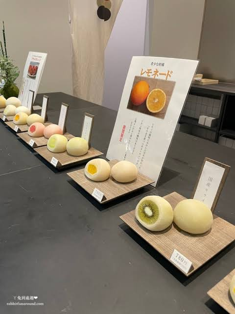
現場雙實戰指令：
1. 通關刷入境碼： 下機後三人持手機出示 VJW 入境 QR Code 通關，領回護照時確認內頁貼好「短期滯在 上陸許可貼紙」。
2. 大廳 3 分鐘啟用免稅碼： 刷海關碼出關後至迎賓大廳，三台手機開啟 VJW 點「建立免稅 QR Code」，拿鏡頭對準護照貼紙掃描，現場產出各人的「店內免稅二維碼」！（長輩手機由晚輩接手代掃）
搞定免稅碼後放鬆享用愛知美食！「千壽炸蝦飯糰」香酥海蝦配越光米；「弁才天水果大福」白豆沙薄皮裹整顆當季草莓與蜜柑，精神飽滿等候 08:00 租車開門。
取車出發！雪胎配備直奔新東名
現場指令： 核對車況、雪胎（胎壁 Studless 標誌）與 ETC 卡，登錄駕照譯本後出發！
• 自駕行駛新東名高速公路。為防止開車疲勞，中途停靠 NEOPASA 岡崎與濱松休息站，喝熱咖啡、伸展筋骨再上路。
【午餐】由比港 Kurasawaya：駿河灣粉紅鑽石
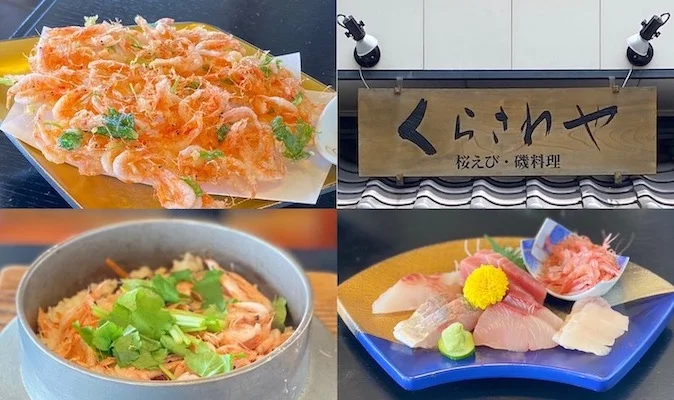
景點與美食特色： 駿河灣被譽為「駿河灣粉紅鑽石」櫻花蝦故鄉。Kurasawaya 坐落於海岸崖壁上，能一邊遠眺海灣，一邊品嚐現炸金黃櫻花蝦什錦（かき揚げ），外衣輕薄酥脆、蝦肉鮮甜。
招牌必點： 櫻花蝦炸什錦御膳（酥脆金黃、香氣濃郁）
推薦 3 人分食加點： 生櫻花蝦刺身（滑嫩清甜）、櫻花蝦釜飯（吸飽海味精華）、鮮魚磯料理味噌湯
薩埵峠：歌川廣重浮世繪同款展望
歷史背景： 浮世繪大師歌川廣重《東海道五十三次・由井》名場面。崖壁直落駿河灣，現代東名高速沿海岸彎曲，與遠方雪白富士山形成古今交會視覺大景。
現場指令： 車停第二停車場，沿步道散步 5 分鐘至頂層觀景台，將車流弧線與富士山連線取景。
駿河國一之宮 富士山本宮淺間大社：富士山信仰起點與神水占卜

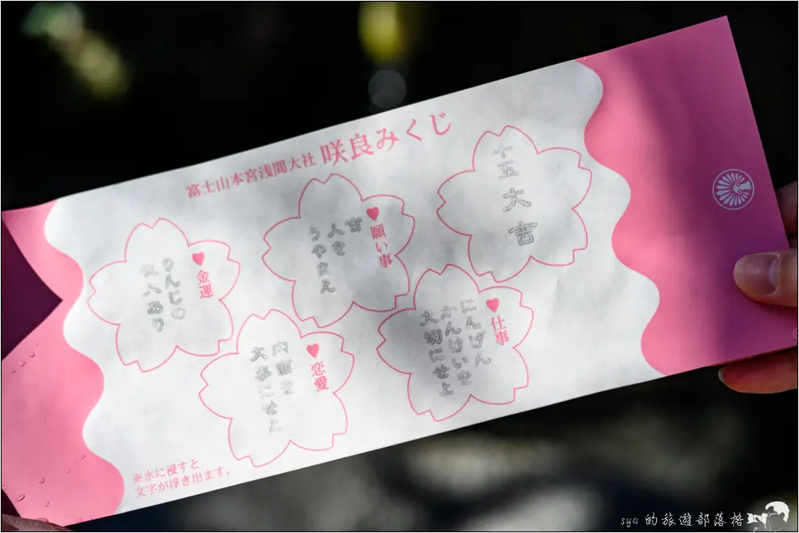
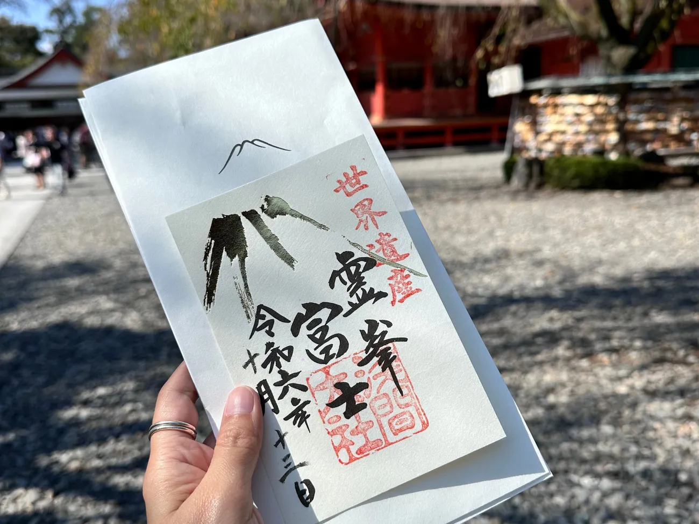
文化特色： 全日本 1300 多座淺間神社總本宮，世界遺產資產。特別天然紀念物「湧玉池」每天湧出數十萬噸富士山雪融伏流水。
現場指令： 參拜朱紅本殿，社務所求取「富士山社紋手寫御朱印」，並取無字神籤至湧玉池將神籤浸水顯字。
神田川親水廣場：朱紅水神橋與絕美倒影
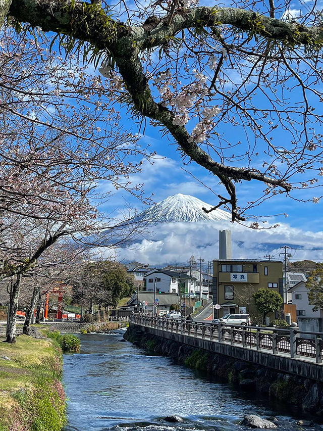
從湧玉池流出的神田川，清澈見底。朱紅水神橋與富士山倒影同框，氣氛清幽。
杉山水果：生水果果凍始祖名店
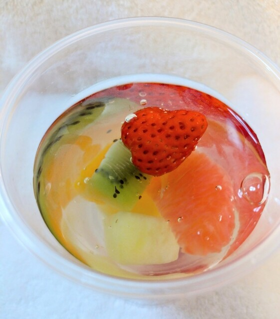
生水果果凍發明始祖！當天嚴選熟成草莓與皇冠哈密瓜手工製作，晶瑩剔透爆汁。車上現吃直接含稅結帳，不辦退稅。
夢之大橋、野生動物園、Aoki 生鮮採買、山中湖蘋果派、日落鑽石富士與甜點集中
【當日行程時間表】
富士山夢之大橋：通往富士山頂的天空階梯
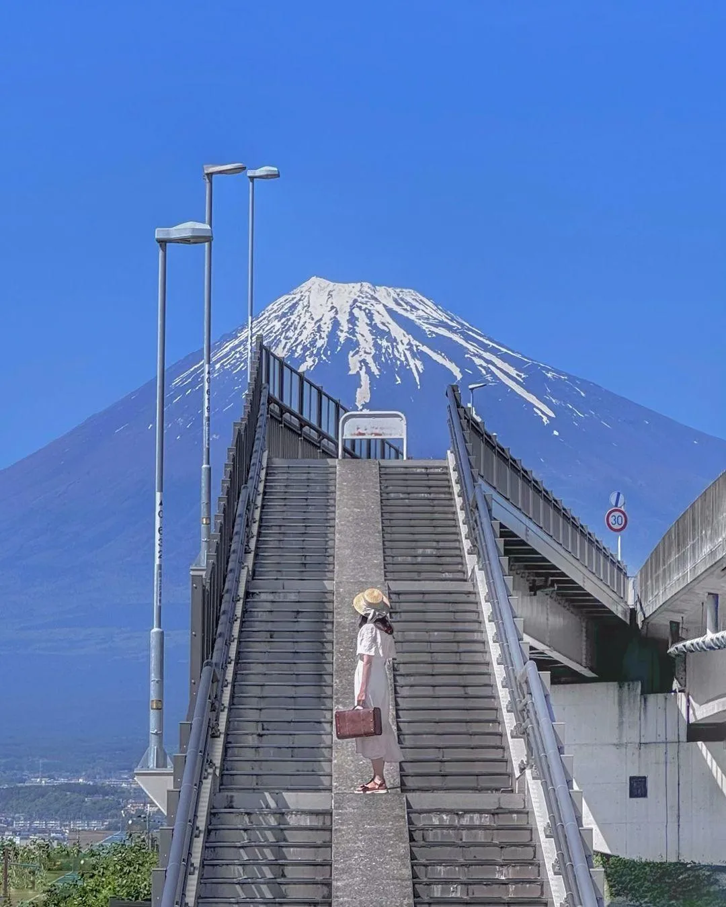
站在階梯底部以極低角度仰拍，高聳階梯延伸線直對雪冠富士山，呈現「天空之梯」震撼感。
新橋淺間神社（木之花神社 / 戀人之聖地）
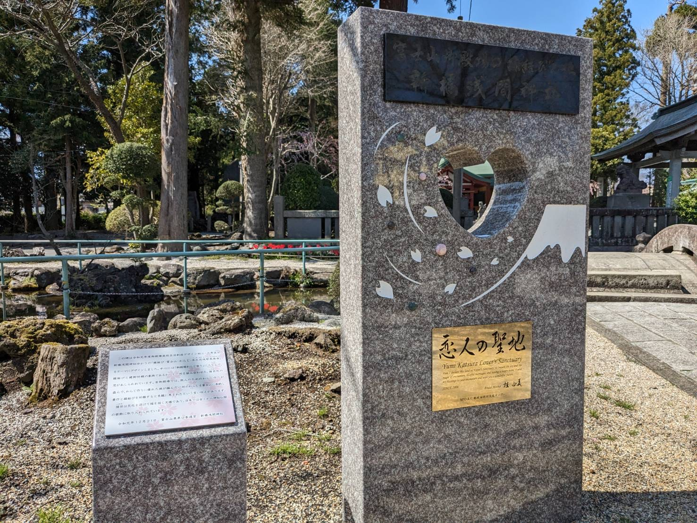
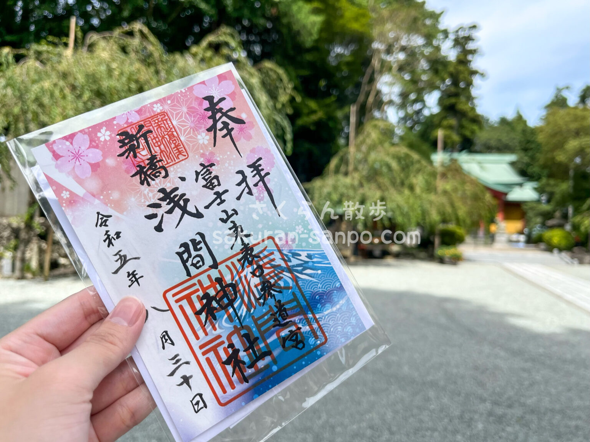
相機對準愛心石碑鏤空處把富士山框在中央；社務所求取「木之花櫻花富士御朱印」，並裝取甘甜的木螺之水。
富士野生動物園：搭叢林巴士親手餵猛獸
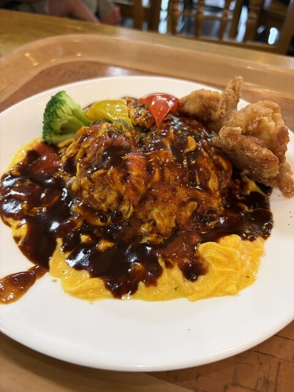
搭乘全鐵網「叢林巴士」親手餵食雄獅與大熊（搶佔右側靠窗座）。午餐於 Safari restaurant 享用超萌的富士山咖哩飯。
Food Store Aoki 御殿場店（頂級生鮮食材集中採買）
超市特色： 出動物園後下山順路第一站！主打嚴選產地直送的高檔肉品，品質極佳，非常適合為接下來 2 晚別墅圍爐集中採買！結帳區記得多取乾冰保冷。
圍爐必買清單： 靜岡自產黑毛和牛壽喜燒肉片、A5 厚切和牛排、御殿場雪融水鮮香菇、極上板豆腐、大蔥、生食級雞蛋、御殿場越光米與甲州白酒。
Paper Moon 山中湖店：手工烤蘋果派外帶
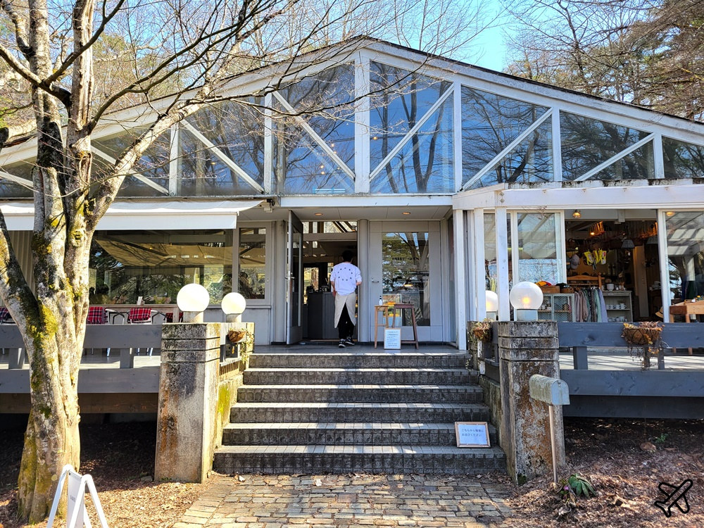
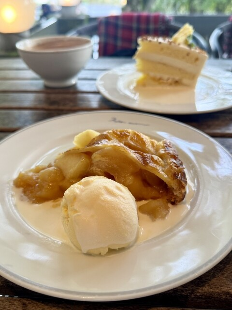
山中湖南岸落羽松木屋。快速外帶招牌溫熱手工烤蘋果派與草莓派，帶上車直接前往親水公園。
長池親水公園：絕美日落「鑽石富士」
黃金時刻： 依官方預報，當天日落壓頂約在 16:13 前後！提早於 15:30 到場停好車架腳架，欣賞夕陽精準落入火山口形成如鑽石般的光芒與湖面倒影。
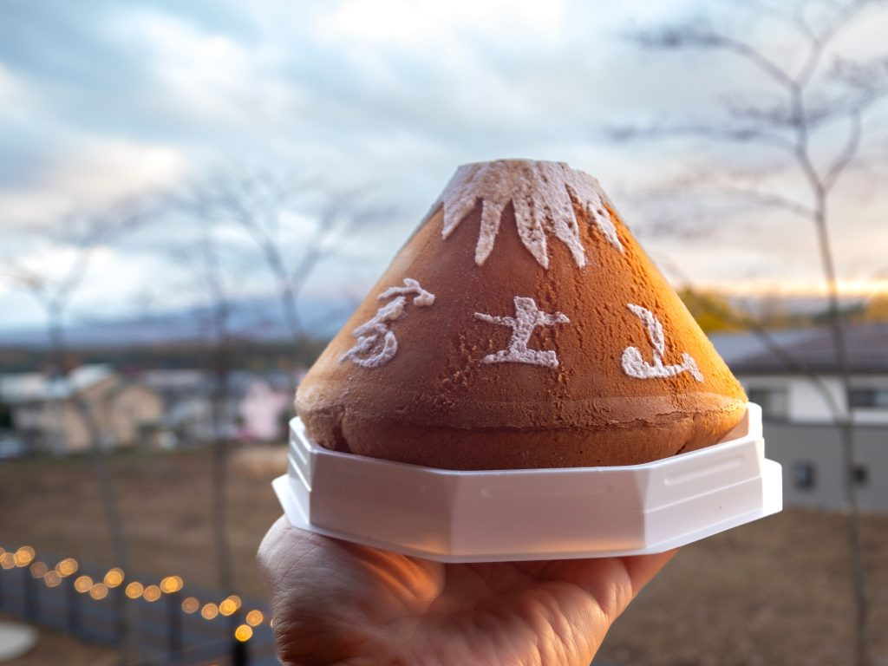
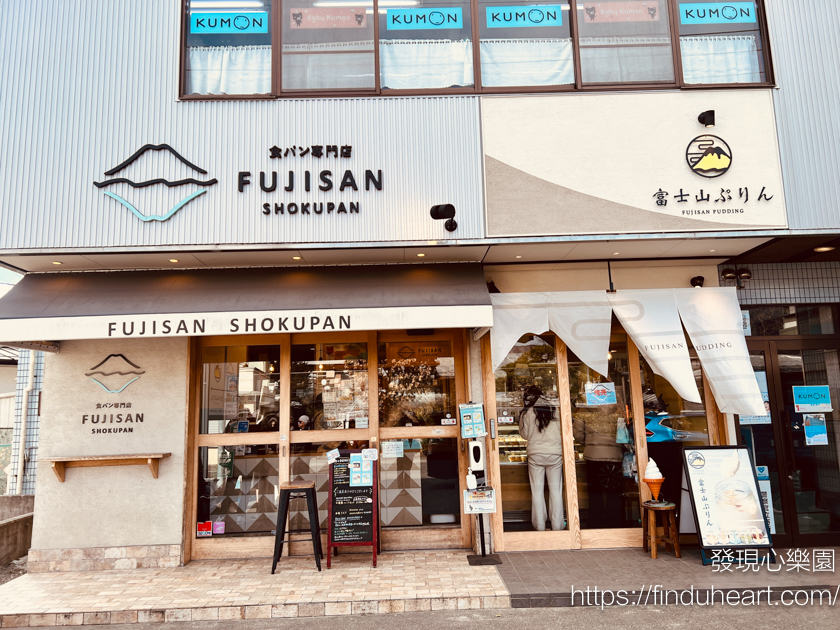
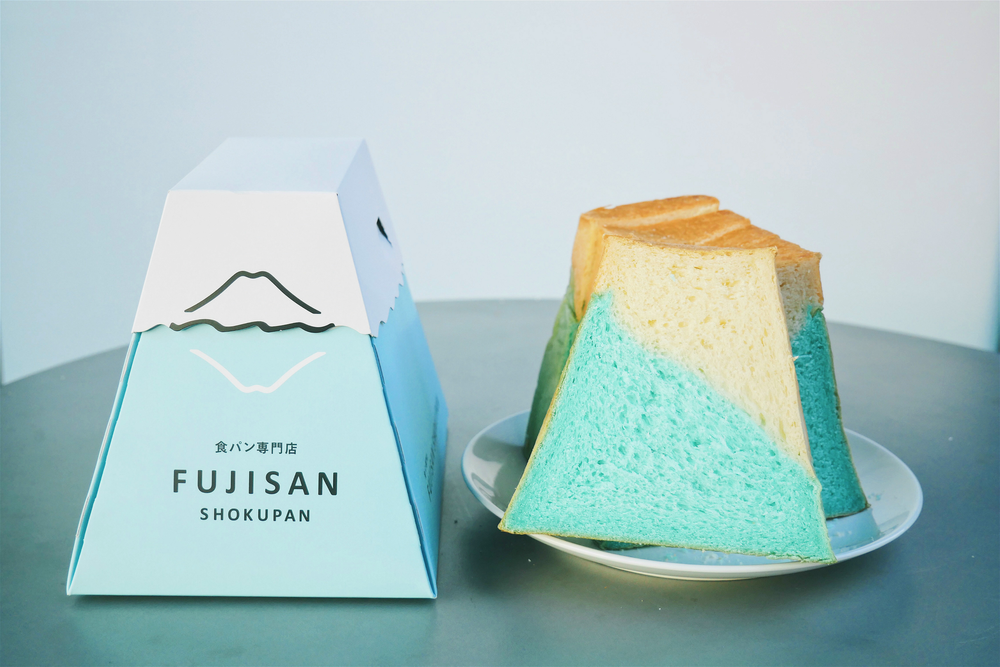
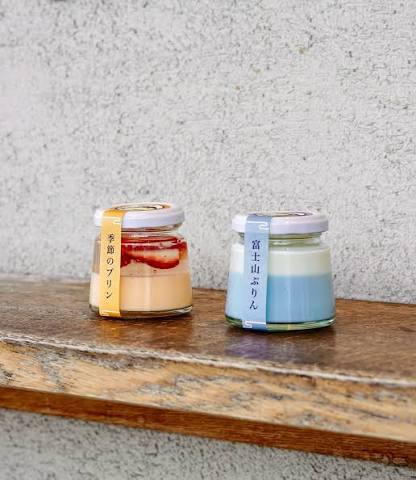
集中在進別墅前買齊！Chiffon Fuji 雪頂戚風蛋糕、FUJISAN SHOKUPAN 藍白富士山生吐司與雙層彈珠汽水布丁，帶回別墅冷藏慢慢享用。
入住 Fuji Grand Villa - TOKI ＆ 自煮壽喜燒晚宴
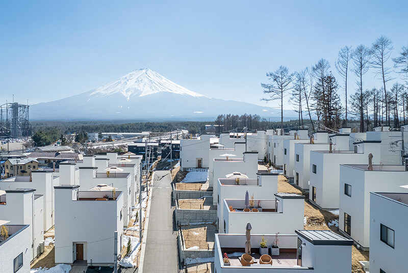
入住獨棟景觀別墅，開全室暖氣，使用別墅專屬廚房烹煮 Aoki 採買之頂級靜岡黑毛和牛壽喜燒圍爐。
精進湖日出、忠靈塔、天空鳥居、toe質感洋食、忍野八海與和牛晚宴
【當日行程時間表】
精進湖他手合濱：粉紅晨曦「子抱赤富士」
地質特色： 前方大室山疊在後方富士山前，宛如母親緊抱孩子稱為「子抱富士」。晨曦朝霞將雪峰染成迷人粉紅色，無風時可拍鏡面逆富士。
黃金時刻： 06:40 (日本時間) 日出！阿豬於車外架相機，家人可在暖氣車內隔窗欣賞。
新倉山淺間公園忠靈塔：明信片上的日本代表景色
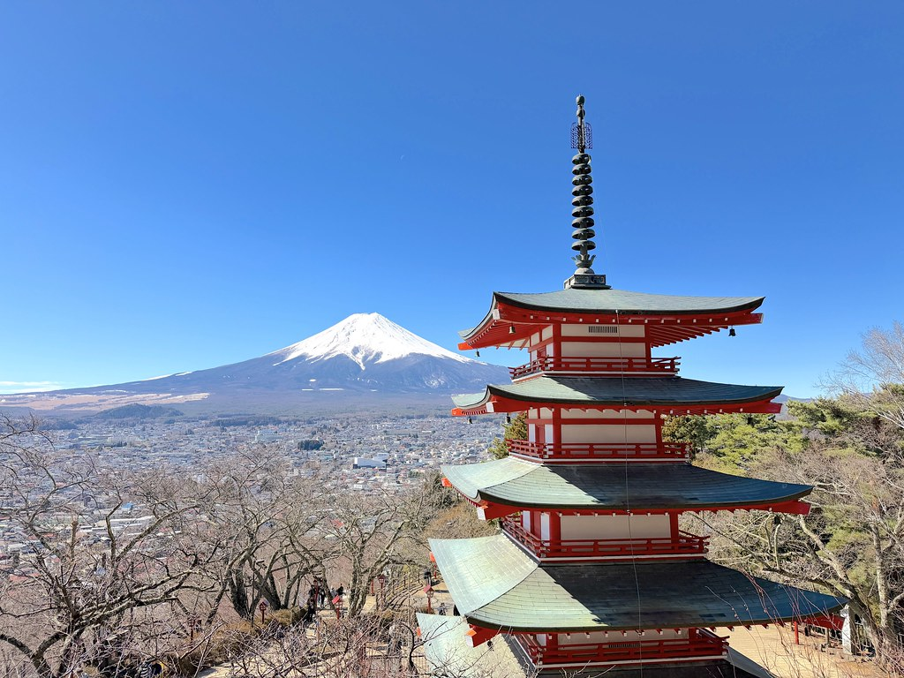
順光清晨直上觀景台。朱紅五重塔忠靈塔、壯麗雪冠富士山與富士吉田市區街景完美同框。
下吉田本町通 ＆ 觀光案內所客製氣泡水
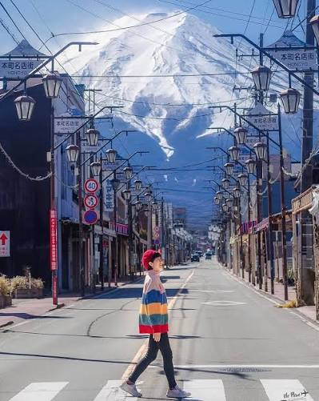
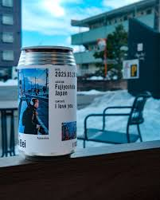
日川時計店前復古老街延伸至富士山。案內所可將當天合照印製在專屬氣泡水罐瓶身！
河口淺間神社遙拜所天空鳥居
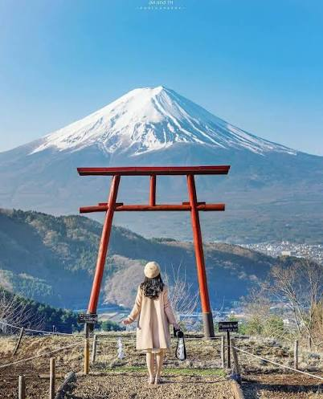
自駕直開山頂免爬坡。每組限時 3 分鐘，朱紅鳥居正對著雪白富士山，宛如聖潔畫框。
【午餐】toe BAR & RESTAURANT：河口湖極致洋食與手作披薩
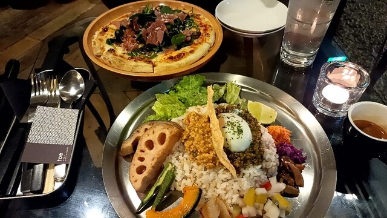
美食特色： 位於河口湖船津的超人氣質感餐廳，融合現代設計與溫暖木質調。主打特製香料乾咖哩飯、現烤義式披薩、熟成肉料理與手沖精品咖啡，用餐環境悠閒舒適。
招牌推薦必點： 特製香料乾咖哩拼盤（搭配半熟溫泉蛋、蓮藕與時蔬）、生火腿芝麻葉手作披薩
推薦分食加點： 主廚義大利麵、精選炙烤牛排、特調氣泡飲與拿鐵
忍野八海名水漫步 ＆ 現烤熱騰騰艾草餅
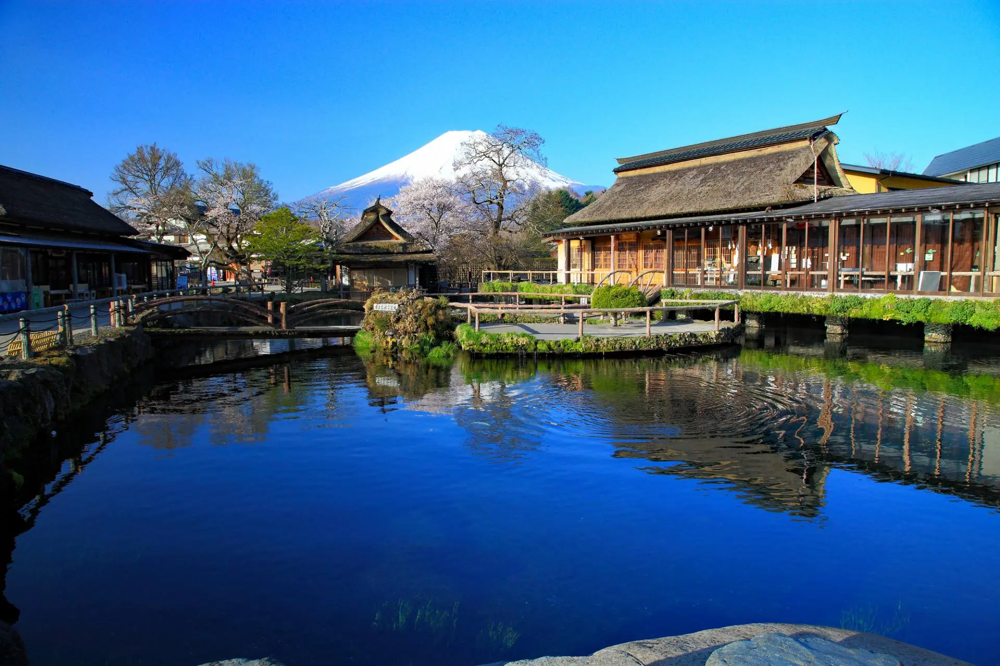
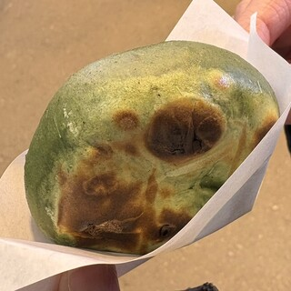
名水百選透徹如藍寶石，倒影茅草屋。下午悠閒漫步，必吃街邊炭火現烤熱騰騰艾草餅。
山梨縣立富士山世界遺產中心
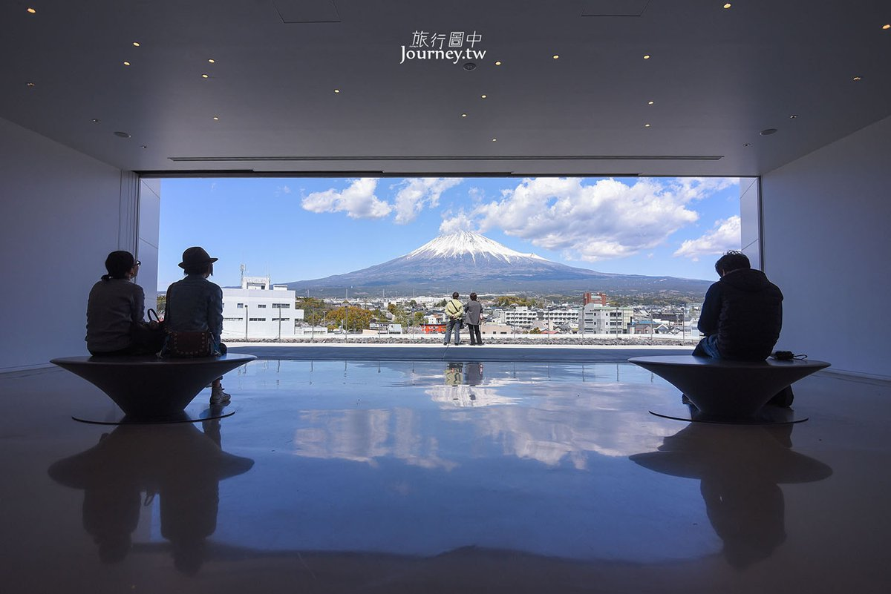
室內恆溫歇腳。觀賞 15 米巨大和紙立體富士山「富嶽三六〇」四季燈光秀。
返回別墅 Fuji Grand Villa - TOKI ＆ 香煎和牛排晚宴
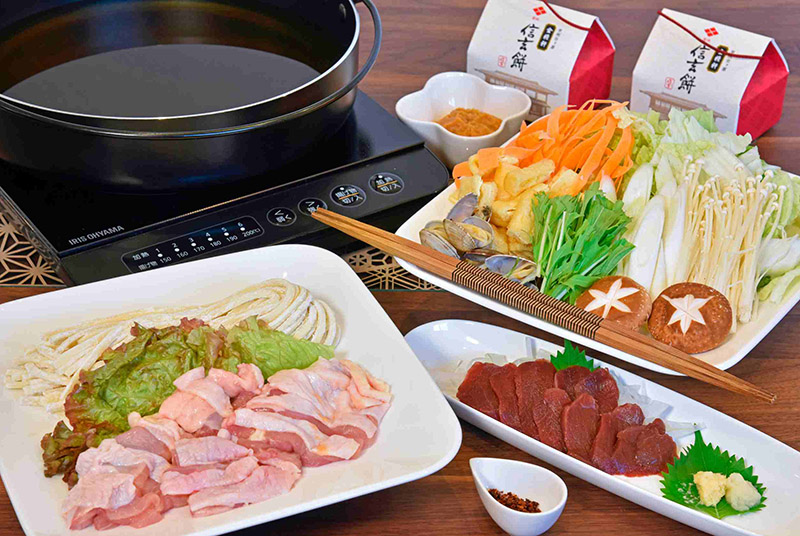
甜點已在前一天買齊，今天傍晚無需奔波！直接回別墅開暖氣休息，使用專屬廚房鐵板乾煎 Aoki 採買的頂級 A5 黑毛和牛排圍爐晚宴。
天上山鞦韆、天晴號遊船、朝霧高原、白絲瀑布與返回名古屋
【當日行程時間表】
天上山公園纜車 ＋ 絕景鞦韆：飛向富士山
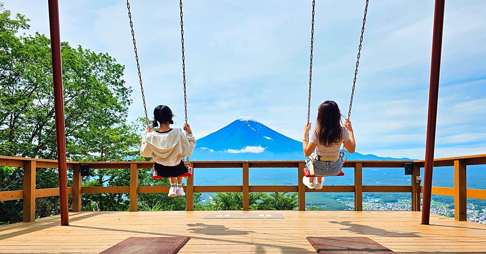
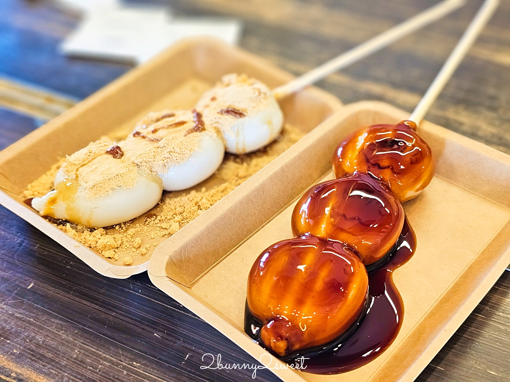
文學背景： 太宰治改編童話《喀嘰喀嘰山》舞台。坐上巨型鞦韆向空中擺盪，眼前毫無遮蔽，體驗飛向富士山的快感！
卡位指令： 08:00 前停好車，搭首班纜車選上行右側窗。出站直奔茶屋買鞦韆票（500日圓/人）免排隊，拍完吃現烤醬油糰子。
河口湖天晴號觀光船
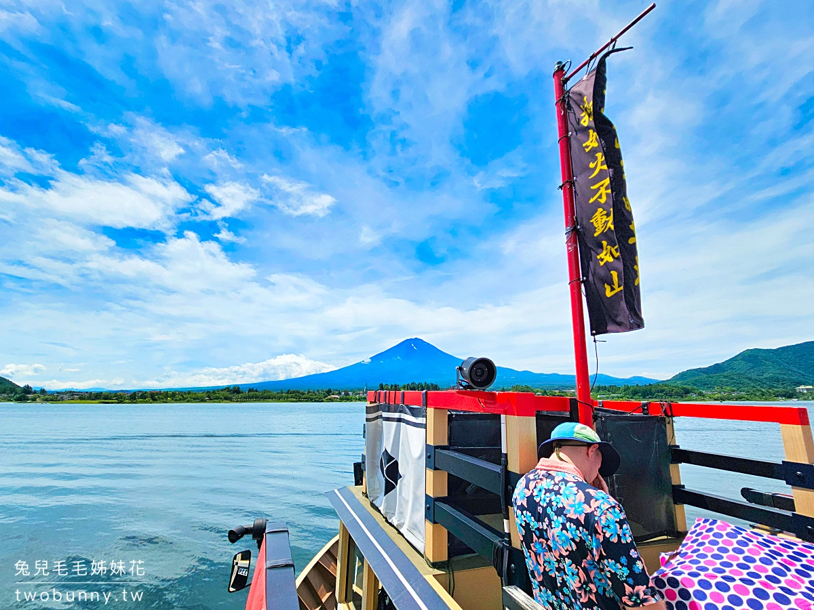
戰國武將安宅船造型。直上 2 樓露天甲板，360 度飽覽水上富士山全景。
朝霧高原 道之站
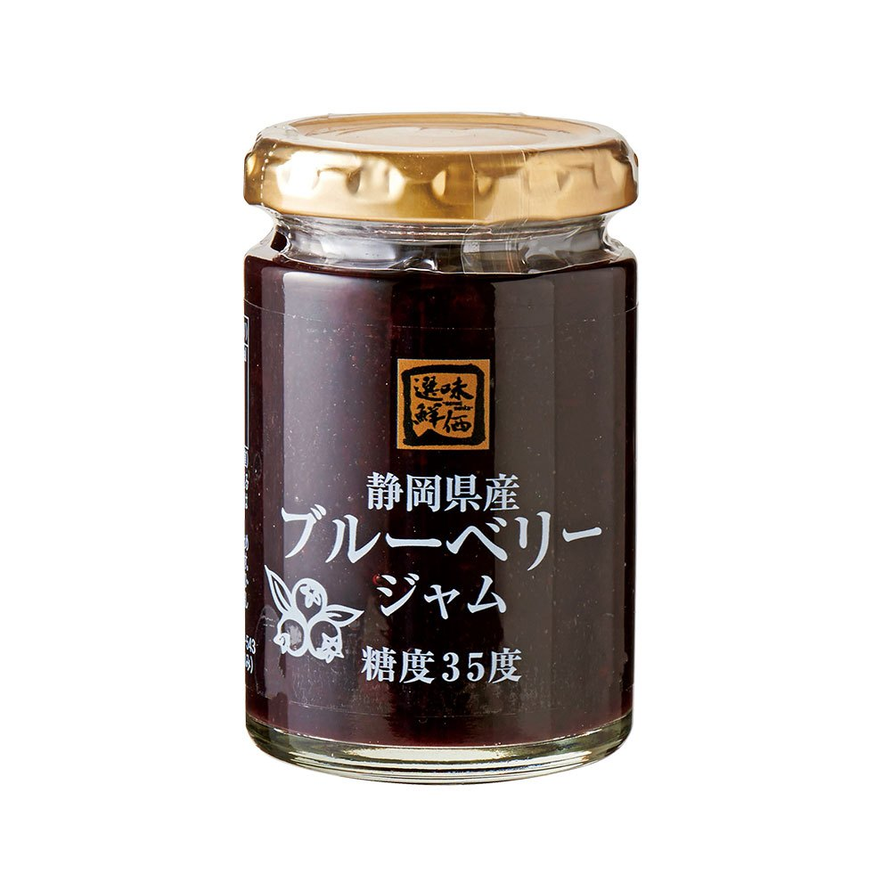
廣袤酪農高原。必搶「富士茶牛乳抹醬」與「藍莓抹醬」，現場品嚐濃郁 Fujiboku 生乳霜淇淋。
【午餐】Mumesan (むめさん)：正宗富士宮炒麵老店
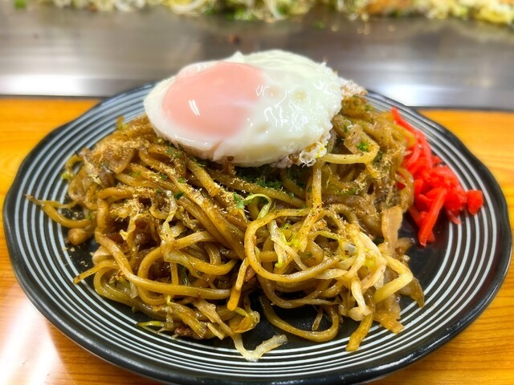
特色介紹： Mumesan 專賣 B 級美食冠軍富士宮炒麵，特製蒸麵加豬油渣高溫鐵板現炒。
Mumesan 必點： 正宗肉粕富士宮炒麵、花枝大阪燒
推薦分食加點： 綜合海鮮大阪燒、鐵板牛筋燒、日式炒烏龍麵
白絲瀑布 (白糸の滝)
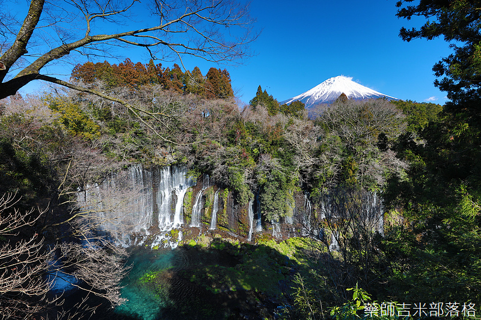
白絲瀑布自 150 米弧形岩壁如白絹般傾瀉，於瀧見橋遠眺全景。
NEOPASA 濱松休息站：春華堂頂級白蘭地鰻魚派採買
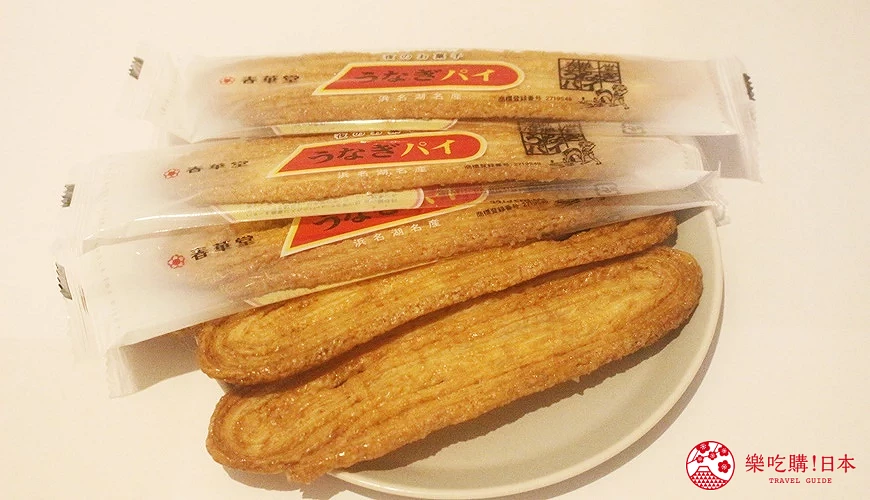
特色介紹： 新東名高速 NEOPASA 濱松休息站。春華堂招牌「鰻魚派（うなぎパイ）」為靜岡最具代表性名物，特別推薦頂級黑金禮盒「白蘭地 V.S.O.P. 款」，融入夏草花與白蘭地香氣，酥脆美味。
必買標標： 春華堂白蘭地鰻魚派（V.S.O.P.）、三日蜜柑抹醬
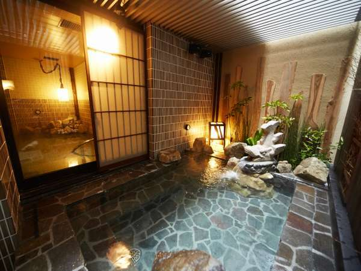
執行備忘： 18:45 前至 Toyota 錦店完成車輛檢查、結清 ETC 費用並順利還車。隨後辦理入住 Dormy Inn PREMIUM Nagoya Sakae，可先至頂樓享受「錦鯱の湯」天然溫泉舒緩身心疲勞。
【晚餐】鳥銀本店：純系名古屋交趾地雞饗宴
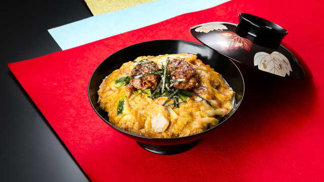
美食特色： 名古屋老字號地雞專門店，採用日本三大名雞之首「純系名古屋交趾地雞」。肉質緊實彈牙、油脂香甜。親子丼淋上金黃半熟地雞蛋液，備長炭炙烤串燒香氣逼人。
鳥銀必點： 極上交趾地雞親子丼、炭火地雞串燒綜合拼盤
推薦分食加點： 酥脆手羽先（名古屋炸雞翅）、新鮮地雞刺身盛合、特製地雞肉丸串（附蛋黃）
大須商店街挖寶、榮商圈採買買包與 400 年料亭晚宴
【當日行程時間表】
【早餐】Konparu 大須本店：昭和摩登炸蝦三明治
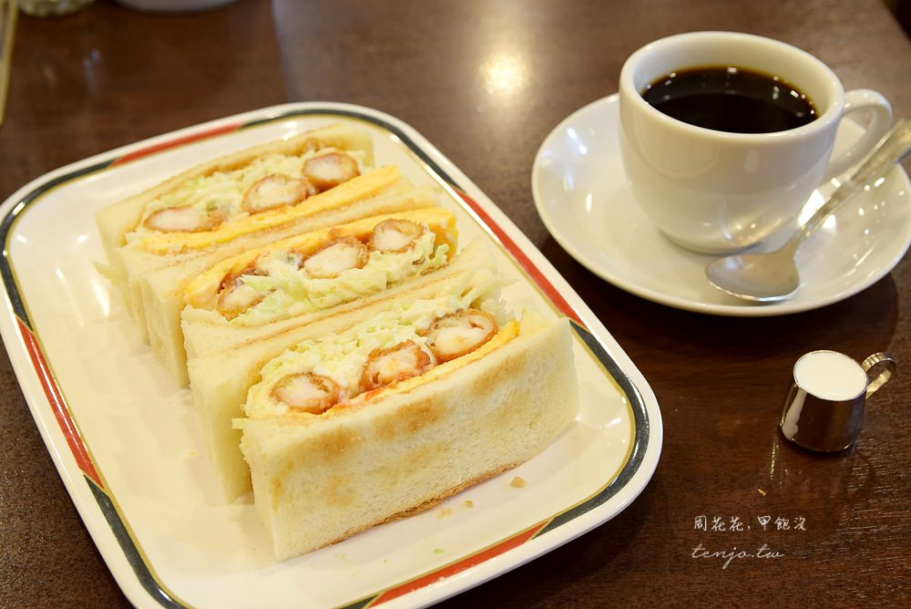
美食特色： Konparu 昭和 22 年名店，香酥吐司夾三隻現炸大明蝦！
Konparu 必點： 現做厚切炸蝦三明治＋濾滴冰咖啡
推薦分食加點： 炸豬排三明治、名古屋紅豆奶油吐司、熱拿鐵
大須觀音 ＆ 大須商店街漫步挖寶
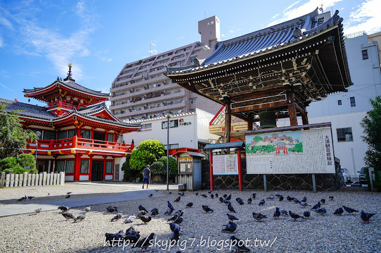
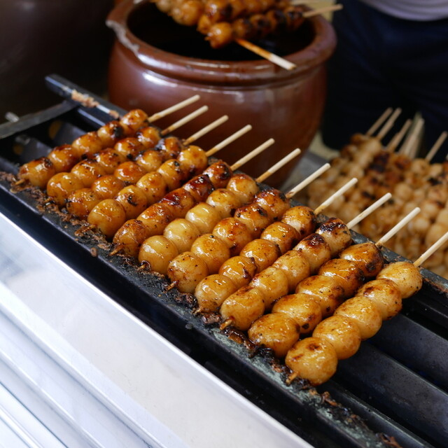
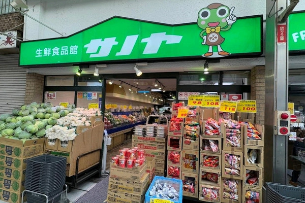
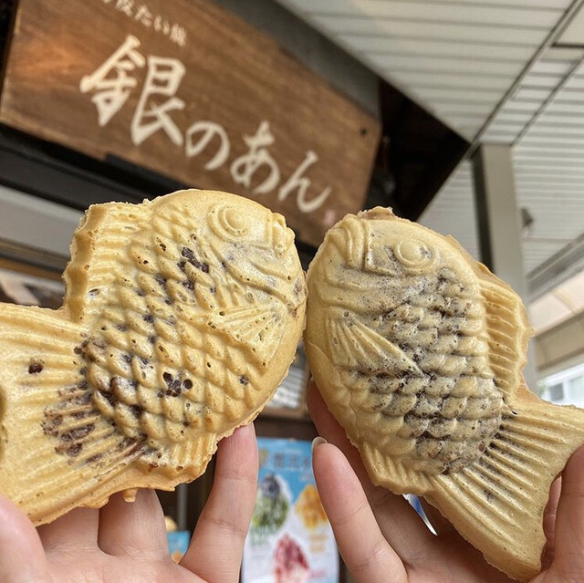
大須拱頂商店街聚集 1200 店家，新雀本店炭火現烤醬油糰子香氣四溢，SANOYA 超市採買當季鮮草莓。
【午餐】カツレツ MATUMURA bis：米其林推薦雪白低溫炸豬排
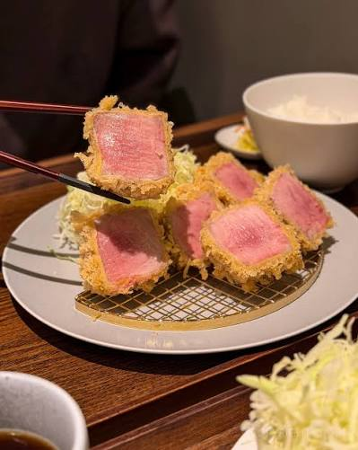
美食特色： 中日大樓內星級名廚指導名店。採用法式低溫慢火油炸，麵衣雪白高雅，切開肉質呈櫻花粉嫩色，多汁極致軟嫩。
招牌必點： 法式低溫慢炸熟成白豬排定食
推薦分食加點： 特選熟成菲力豬排定食、主廚特製咖哩沾醬碟
榮商圈採買全攻略：松坂屋 95 折買包退稅、治一郎與史努比
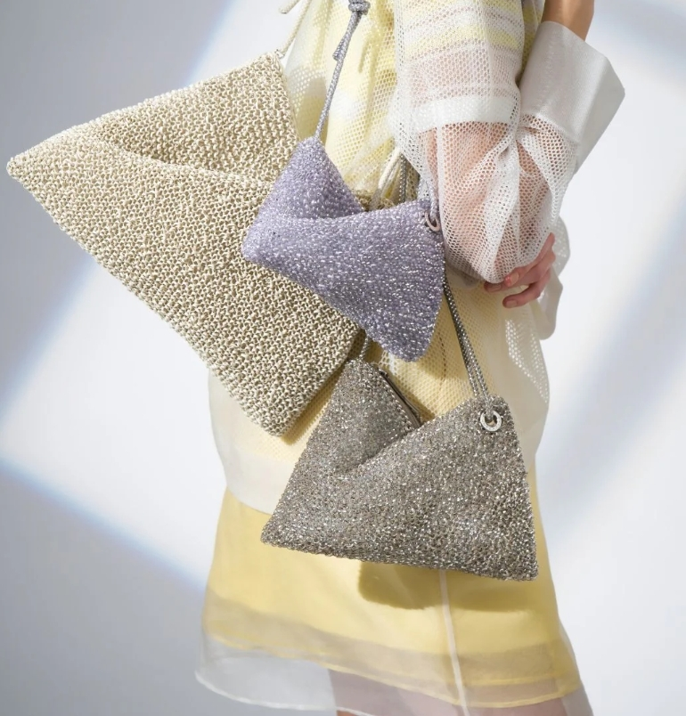
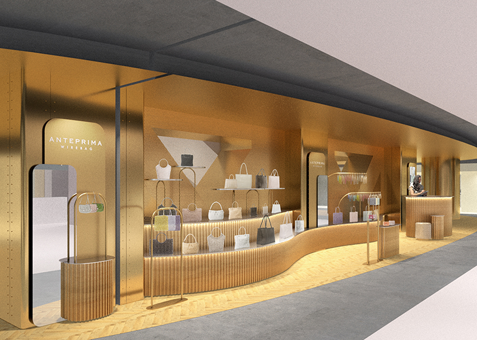
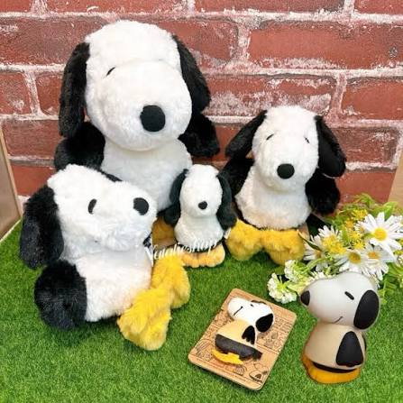
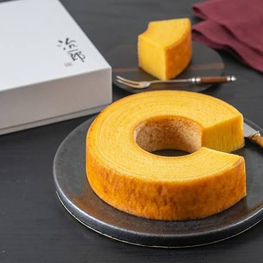
採買重點： 先至松坂屋南館 3F 出示護照索取「外國人 95 折券」➔ 本館 3F Anteprima 專櫃選購 Wirebag Miniatura 編織鋼線包，結帳出示 VJW 免稅 QR 碼（持卡人姓名與護照須完全一致）➔ 松坂屋 B1F 採買治一郎極致濕潤年輪蛋糕 ➔ 沿綠帶公園往北步行至 PEANUTS Cafe 買限定鵜鶘史努比玩偶，順路逛 3COINS 生活雜貨與 Loft 榮店。
• 松坂屋 Anteprima：【87折攻略】先在南館 3F 憑護照領 95 折券，再回專櫃買包辦退稅（扣 1.55% 手續費），整體達 87 折！
• 3COINS 榮門市：【⚠️ 手續費陷阱】未買滿 10,000 日圓請直接含稅刷卡走人！每筆扣 320 日圓固定手續費，低消退稅實拿不到 40 元台幣，極不划算。
• Loft 榮店：若順遊逛文具雜貨，店內滿 5,500 日圓即可辦退稅（扣 1.55% 手續費），建議小物集中一次結清。
【小年夜晚宴】THE KAWABUN NAGOYA：400年老宅庭園和風牛排晚宴
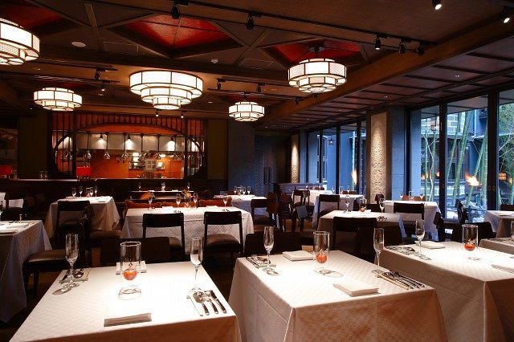
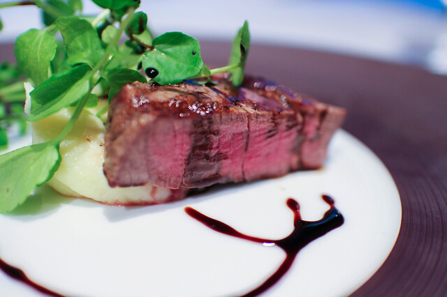
晚宴與氛圍： 400 年歷史尾張德川家御用老字號料亭「河文」舊址，融合大正摩登與日式庭園造景。出示預約單入座，漫步玻璃長廊拍攝中庭水池燈光倒影，享用炭火炙烤頂級和風牛排套餐、季節前菜拼盤與義大利麵。
別小江神社、高島屋買鍋、置頂打包、機場新制海關確認與返台
【當日行程時間表】
別小江神社：七彩日式和傘天棚與手繪御朱印
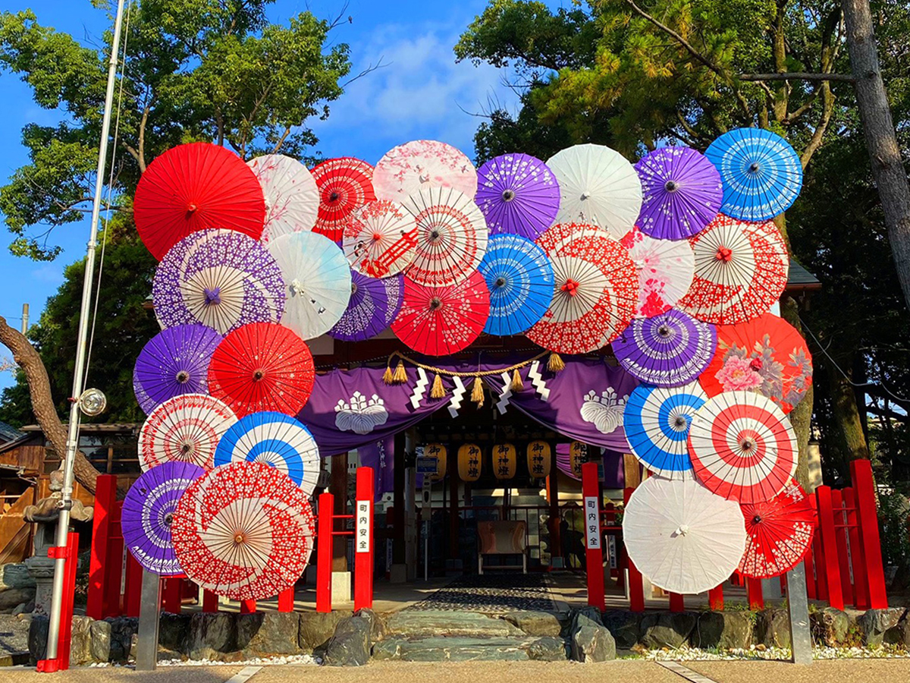
藝術特色： 連續多年獲選全日本人氣第一名御朱印！參道上方懸掛數百頂七彩和傘天棚，陽光穿透灑落光影。社務所手繪藝術御朱印極具收藏價值。
現場指令： 傘棚正下方仰拍美照，社務所求取限定藝術御朱印。
若上午參拜時間充裕，強烈推薦順訪車程僅約 8 分鐘的 伊奴神社！供奉守護水患的「犬王神」，境內立有日本罕見的「白犬石雕像」。社務所販售超萌狗狗立體神籤、寵物御守與繪馬，愛犬人士必訪祈福聖地！
【午餐】とり五鐵：極上交趾地雞親子丼定食
特色介紹： 東京人形町老字號「玉ひで」指導之分店，位於 JR 名古屋高島屋 13F。半熟金黃蛋液配上彈牙交趾地雞肉，鮮甜美味。
招牌必點： 極上交趾地雞親子丼定食
推薦分食加點： 名古屋地雞炸雞塊、烤雞肉串定食、地雞水炊雞湯鍋
名站 Hands 買不沾鍋 ＆「置頂打包」實戰攻略
採買重點： 高島屋 9F Hands 增購富山製「北陸鋁業 (hokua) 超輕量不沾鍋」，導熱極快耐用。結帳出示 VJW 店內免稅 QR 碼，要求專櫃加裝防撞提把並封箱裝箱。
⚠️【Hands 獨立退稅防呆】：
高島屋 5～11F 的 Hands 採買金額「不可」與高島屋全館合併計算！買鍋單價已滿 5,500 日圓直接達標，必須在 Hands 5F 詢問處專櫃單獨辦理退稅（扣 1.55% 手續費）。
【15:30 取行李時・置頂打包原則】：
不沾鍋紙箱、松坂屋包包與高單價伴手禮若要裝進大行李箱託運，打包時請強制放置在行李箱「最上層」（拉鍊一拉開就能拿出）！萬一抵達機場在手機上按出「🔴 紅燈抽檢」，至海關窗口開箱能 10 秒內取出受檢，免去翻箱倒櫃的狼狽。
※ 打包完成後，16:30 搭乘名鐵 μ-SKY 特急直奔機場（對號座 28 分鐘）。
中部機場 2027 免稅新制線上關稅確認 ＆ 託運 SOP
【離境當天 4 步實戰流】
- 連接專用 Wi-Fi： 手機關閉行動數據漫遊，Wi-Fi 搜尋並連上出發大廳告示牌指定之「手續專用無線網路」（一般機場免費 Wi-Fi 或 eSIM 漫遊無法替代觸發）。
- 點選線上海關確認： 三台手機分別開啟 VJW 桌面捷徑，點擊進入「出境線上海關確認」。
- 查看審查燈號分流：
- 🟢 顯示綠燈： 系統線上核准通過！放心推行李箱與不沾鍋前往樂桃航空櫃檯排隊辦理行李託運。
- 🔴 顯示紅燈： 被系統抽檢！帶著行李與免稅品推至出發大廳「海關檢查窗口」接受人工開箱查驗，通過蓋章後再去樂桃櫃檯託運。
- 安檢與退稅入帳： 託運完成後通過人身安檢與出境審查閘門，免稅款由店家系統自動刷退回原信用卡（無須在機場排隊領現金）。
【除夕年夜飯】丸屋本店鰻魚飯三吃 ＆ 坂角蝦餅伴手禮滿載返台
年夜飯與返台： 中部機場 1 航廈 4F 丸屋本店享用木缽蒲燒鰻魚飯三吃（一吃原味焦香、二吃拌蔥花山葵、三吃高湯茶泡飯）。入關免稅店必買坂角總本鋪「新特麗亞蝦餅」，搭乘 22:50 樂桃 MM723 圓滿返台！
2027 日本免稅新制（先付後退）消費與離境全攻略
徹底移除入境雜訊，專注「市區消費分單 ➔ 憑證存證 ➔ 機場專網認證 ➔ 綠紅燈判定 ➔ 託運登機」實戰守則
離境退稅與託運判定全流程圖
線上審核合格！收起手機，推著大行李箱與不沾鍋前往樂桃櫃檯辦理行李託運並領取登機證。
帶著行李推至大廳「海關檢查窗口」，由海關人員核對護照與指定免稅品（因置頂打包可 10 秒取出），合格蓋章後再去樂桃櫃檯託運。
一、 市區商店消費採買鐵律（2/4 榮商圈、2/5 名站高島屋）
- 門檻標準： 同一店家當日消費未稅金額達 5,000 日圓以上 方可辦理免稅。
- 一對一鐵律（嚴禁混刷）： 結帳時出示的「VJW 免稅二維碼姓名」必須與「付款信用卡持卡人姓名」100% 完全相符！阿豬買刷阿豬的卡、小貝買刷小貝的卡、丈母娘買刷丈母娘的卡。若混刷會被系統直接判定無效。
- 【新制關鍵】分單結帳原則（嚴禁連坐懲罰）： 新制取消了消耗品特殊密封袋與 50 萬日圓上限，但商品仍須「完整帶離日本」！海關以「單筆退稅登錄」為查驗單位，若同筆單內有任一件零食在飯店吃掉，出境抽檢少一件，該單全部商品退稅資格全數取消並補稅。境內要吃的零食飲料，與帶回台灣的伴手禮務必分開兩次結帳！
- 【防呆關鍵】實體收據與螢幕確認截圖存證： 店家登錄完成後，紙本收據放皮夾絕對不能丟，手機亦請立即將退稅登記完成畫面或 QR Code 截圖存入相簿，以防機場連線機台異常時作為人工查驗憑證。
- 動態防偽截圖無效： 店內出示免稅條碼時必須即時連網開網頁出示，系統具動態防偽機制，螢幕截圖無法掃描！若遇中小型店家機台未連線，請直接出示實體護照正本。
二、 中部國際機場 3F 離境確認四步驟（2/5 傍晚 17:15）
※ 退款須知：機場海關僅負責「出境核驗」，實際退款由店家合作之退稅平台（如 Global Blue、JP Refund 等）刷退至原信用卡，入帳約 1～3 週。
新制避坑 8 大重點檢核
採買避坑與手續費試算決策手冊
陪老婆逛街專用：手續費剝削試算、各店門檻對照、指定名品極致省錢戰術
一、 各大熱門採買通路手續費與門檻對照表
| 購物通路 / 店家 | 手續費實態 | 實質退稅率 | 建議處理原則（何時該退稅？） |
|---|---|---|---|
| 3COINS (榮地下街等門市) | 每筆扣約 320 日圓 (JP Refund) | 浮動剝削 (極低) | 【未買滿 10,000 日圓直接放棄退稅】！低消退稅實拿不到 40 元台幣，耗時排隊與查驗完全不合算[cite: 3]。 |
| Loft (榮店 / 名站店) | 扣 1.55% 手續費 | 約 8.45% | 含稅滿 5,500 日圓即可辦理，比例扣款不倒貼，文具生活雜貨建議集中一次結清[cite: 3]。 |
| Hands (高島屋 5-11F) | 扣 1.55% 手續費 | 約 8.45% | 重要陷阱：不能與高島屋合併，須在 Hands 5F 詢問處單獨辦理（滿 5,500 日圓）。 |
| 無印良品 (MUJI 直營大門市) | 0% (完全免費) | 完整 10% | 含稅滿 5,500 日圓全額實退，直營旗艦門市採買最划算。 |
| 松坂屋 / 高島屋 百貨專櫃 | 扣 1.55% 手續費 | 約 8.45% | 持護照先至服務台領 外國人 95 折券，疊加退稅約享 87 折（Anteprima 買包必備）。 |
| 唐吉訶德 / 連鎖藥妝店 | 0% (完全免費) | 完整 10% | 滿 5,500 日圓全額退，出示官方數位折價券滿額再享現折 3%～7%。 |
二、 固定手續費侵蝕試算：為什麼低額不退才是真賺？
以 3COINS 採用第三方平台（每筆收取固定約 320 日圓手續費）為例試算：
• 消費稅（10%）：約 500 日圓
• 扣除固定手續費：-320 日圓
• 實際拿回退款：僅約 180 日圓（約新台幣 38 元）
代價：花 10 分鐘讓店員登錄、手機保存收據、出境在機場連 Wi-Fi 按機台，只為賺不到 40 元，極不划算[cite: 3]！
• 消費稅（10%）：約 1,090 日圓
• 扣除固定手續費：-320 日圓
• 實際拿回退款：約 770 日圓（約新台幣 160 元）
結論：手續費佔比降至合理範圍，才具備排隊與承擔查驗的時間價值。
💡 核心原則：旅行中的時間也是昂貴成本！在 3COINS 等固定扣費店家，若總額未破 10,000 日圓，請帥氣地直接刷卡拿含稅發票走人，把寶貴時間留給享用美食與陪伴家人[cite: 3]。
三、 行程指定採買三大名品「極致省錢戰術」
組合拳 87 折：
1. 結帳前先持護照至南館 3F 顧客中心領取「外國人 95 折券」。
2. 回本館 3F 專櫃現折 5% 後刷卡結帳。
3. 出示 VJW 辦理退稅（扣 1.55% 手續費後實退約 8.45%）。
• 實質折扣綜效達 約 87 折，現省逾萬日圓！
獨立退稅 ＋ 信用卡回饋：
1. 於高島屋 9F Hands 挑選富山製 hokua 不沾鍋。
2. 至 Hands 5F 獨立櫃檯退稅（單價高直接達標，扣 1.55% 手續費）。
3. 使用海外高回饋信用卡（如 3%～4.5% 現金回饋卡）結帳，直接吃掉海外 1.5% 交易手續費還倒賺現金！
現吃走含稅、外帶走免稅：
1. 現吃不退稅：車上要吃的杉山水果生果凍、Paper Moon 蘋果派直接含稅結，避免因在境內食用遭連坐補稅。
2. 坂角蝦餅留機場買：中部國際機場出境管制區免稅店常態備貨，現場直接標未稅價販售，免登錄、免排隊、不佔託運重量！